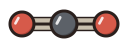
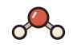
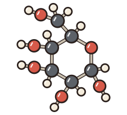

:

6 CO₂
6 H₂O
C₆H₁₂O₆6 O₂
6 CO₂ + 6 H₂O → C₆H₁₂O₆ + 6 O₂
About this simulation & standards
Investigate oxygen collection, explore a leaf, account for atoms in sugar, and compare photosynthesis with respiration during day and night.
LIFE SCIENCE · GRADES 6–8
TEKS 6.8B · partial · TEKS 7.5E · partial · MS-LS1-6
Connections may address only part of a standard; consult the lab’s model and alignment notes.